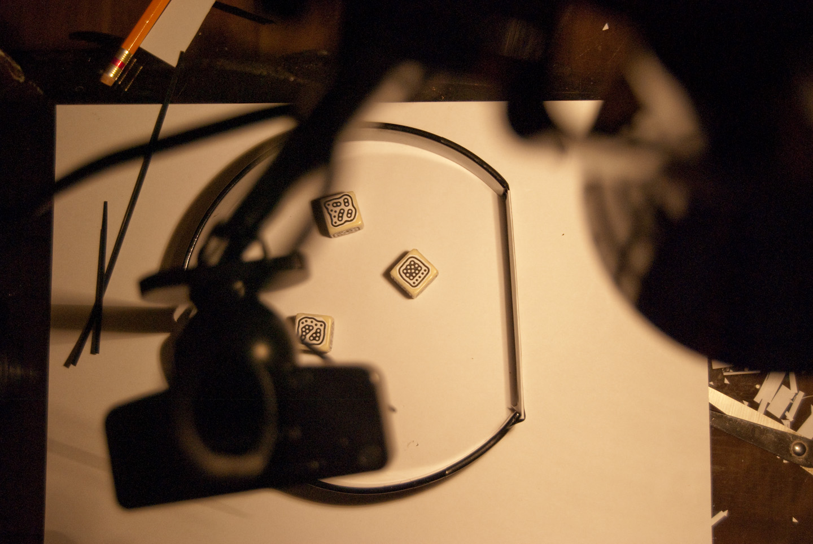

In “Interactive composing: an overview” [1], Joel Chadabe calls complexity an important quality of a random number generator, a fundamental component of the response system in his interactive performances. He explains it in terms of throwing dice: there’s no easy way to describe – or predict – the sequence of numbers obtained by that action. The concept of complexity is quite clear in that case, and as a consequence, randomness is far more complicated to generate with a machine than with an organic system. In the works “Solo” and “Rhythms”, which he explains in the article, the computers used for performance include some degree of randomness in their response algorithms, and the performer executes control actions, creating a dialog. That way, the performance develops in an interactive way.
The example of throwing dice, and the notion of a controller, somehow made a short circuit in my head. Measuring nature or organic systems, it’s not so difficult to get randomly generated values. Nature is full of them. Also, in the case of human beings, randomness is even an important component of one of our favorite leisure activities: gaming.
Throwing dice, drawing a card from a shuffled deck or spinning a roulette wheel are simple notions of randomness, at least outside the mathematical or academic world. They are also actions that can be controlled to some extent, but their results can’t. So my thinking when I was reading Chadabe’s article was: “why not control randomness in a simple, direct way?”
Chadabe’s mention of dice rolling seemed interesting as a feasible way of implementing a user-controlled random number generator. It’s of course a complicated way of looking at a very simple process, but I wanted to squeeze some juice out of it, so I took these ingredients:
The bricolage work was basically to transform ordinary dice into “Fidiceals”: dice with reacTIVision fiducials on their faces instead of dots. I printed the fiducials at the right size and glued them to the faces of the dice. The rest is mostly software.
reacTIVision generates TUIO (OSC) messages [7][8], which are received by Pure Data. Pure Data runs some patches that do these tasks:
All those notes are sent as MIDI messages to SimpleSynth, which generates the final sound.
At the beginning of each measure, the Pure Data patch detects how many dice are present, their position and number (the visible fiducial), and selects the corresponding notes and patterns. This way, a dynamically changing composition can be made, and modified by throwing dice.
To keep a limited zone for placing the dice, and to try to get good illumination, I first built the setup around the Ikea lamp. However, it was hard to get uniform illumination with that configuration, so I finally got rid of the light bulb part of the lamp and kept just the base and the lower half of its “spine” (it can be unscrewed and separated). In the end, I used ambient illumination.
And that’s all. So, let the game begin!
The simplicity of this work illustrates the concept of interactivity in the sense that you can perform some actions without knowing exactly what the system is going to give back to you (within some logical limits, of course). However, one can directly manipulate the random number generating mechanism, which gives an interesting feeling of control. Somehow it’s like “randomness in your hands”, because a tangible interface is used to directly “handle” and “touch” the randomness generation mechanism. I believe many other similar works could be derived from this one.
[1] Chadabe, J. “Interactive composing: an overview”. Computer Music Journal. 1983.
[2] https://en.wikipedia.org/wiki/PlayStation_Eye
[3] Bencina, R., Kaltenbrunner, M., Jordà, S. “Improved Topological Fiducial Tracking in the reacTIVision System”. Music Technology Group, Audiovisual Institute, Universitat Pompeu Fabra, Barcelona, Spain.
[4] Kaltenbrunner, M., Bencina, R. “reacTIVision: A Computer-Vision Framework for Table-Based Tangible Interaction”. https://reactivision.sourceforge.net/
[5] Pure Data: https://puredata.info/
[6] SimpleSynth: https://notahat.com/simplesynth/
[7] Kaltenbrunner, M., Bovermann, T., Bencina, R., Costanza, E. “TUIO – A Protocol for Table Based Tangible User Interfaces”. Proceedings of the 6th International Workshop on Gesture in Human-Computer Interaction and Simulation (GW 2005), Vannes, France.
[8] https://www.tuio.org/